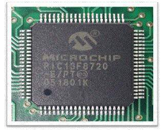
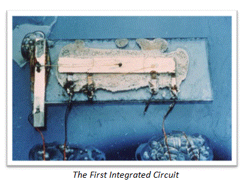
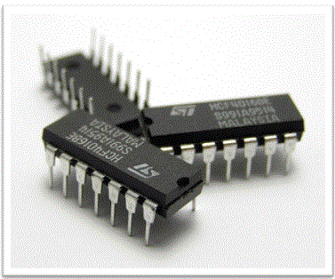
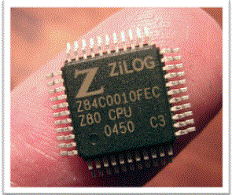

• Need
• History
• Types
Digital Integrated Circuits
Analog Integrated Circuits
An Integrated Circuit (IC) also referred as a monolithic integrated circuit is an assembly of different electronic components like connected together on one small semiconductor wafer (usually silicon). An IC is also called as a chip or a microchip. Today’s IC’s have millions or even billions of electronic components like transistors, resistors, diodes, flip-flops, MUX, DEMUX etc integrated(connected) together on a single unit which is equivalent to the size of a fingernail. All the electronic equipments today use a number of Integrated circuits. IC’s have revolutionized the world of electronics. After the invention of IC’s all electronic components like mobile phones, computers and other home appliances have become cheaper and smaller in size. Integrated Circuits can perform a number of operations such as amplification, oscillators, memory storage, arithmetic and logical operations etc.

Definition of Integrated Circuit
An integrated circuit is defined as:
“A circuit in which all or some of the circuit elements are inseparably associated and electrically interconnected so that it is considered to be indivisible for the purposes of construction and commerce”
Need of Integrated Circuits
The operations today performed by IC’s were earlier performed by using vacuum tubes. Vacuum tubes consisted of electrodes inside a glass tube filled with vacuum. They were slower in operation, expensive and bigger in size. In order to make technical advancements it was necessary to increase the number of components which in turn would increase the cost and size. Also, previously all the components were individually connected whereas today different components in an IC are printed as a single unit using photolithography. Very thin paths of metal like copper and aluminum are laid directly on the same piece of material. These thin paths function like wires and electrically integrate all the different components of the integrated circuit.
History of Integrated Circuits
In 1958 Jack Kilby an engineer of Texas instruments demonstrated successfully the first working integrated circuit device. The first costumer to this new invention was the US Air Force. In the year 2000 Jack Kilby won the Nobel Prize in Physics for miniaturized electronic circuits.

One and a half years after Kilby demonstrated his IC design, Robert Noyce of Fairchild Semiconductor Limited came up with his own integrated circuit. His model solved many practical problems which Kilby’s device had. It was made up of silicon where as Kilby’s was made up of germanium. Jack Kilby and Robert Noyce both received US patents for their part of work on integrated circuits. After several years of legal issues both companies wisely decided to cross license their technology and created a huge global market.
The earlier developed IC’s had only few transistors and resistors on the chip. In the early 1960’s SSI circuits were manufactured. SSI (Small Scale Integration) circuits consisted of few tens of components on the chip. Philips TAA320 is an example of SSI design. By the late 1960’s MSI (Medium Small Integration) devices came into existence which had 100’s of transistors on the chip. MSI devices were less expensive and allowed more complex systems in very less space. Further development in the mid 70’s let to LSI (Large Scale Integration) devices which had thousands of transistors per chip. 1KB RAM is an example of a LSI device. Than in early 80’s VLSI (Very Large Scale Integration) was introduced. Today we have very complex devices such as ULSI (Ultra Large Scale Integration), SOC (System ON Chip), WSI (Wafer Scale Integration) and 3D-IC (Three dimensional Integrated Circuits).
Types of Integrated Circuits
There are many types of IC available.
Digital Integrated Circuits
Digital IC’s are the one’s which work only on two defined levels 1’s and 0’s. They work on binary mathematics. They can contain millions of logic gates, flip-flops etc integrated on a single chip. Microprocessors and microcontrollers are examples of digital IC’s
Analog Integrated Circuits
Sensors, OP-AMP’s are analog IC’s. They work by processing continuous signals. They perform functions such as filtering, amplification, modulation, demodulation etc.
Sometimes analog and digital IC’s can be combined on a single chip, such IC’s are called as mixed signal integrated circuits
Examples-
Figure below shows three different 14 pin plastic packed DIP (Dual in line package) IC’s manufactured by ST microelectronics.

Figure below shows a ZiLog Z80, A 44 pin IC in a QFP (Quad Flat Package).

 by
by